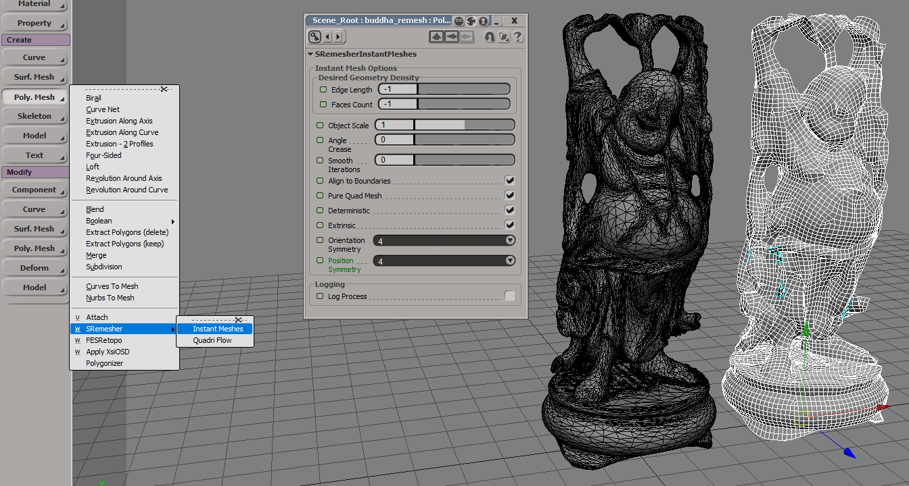
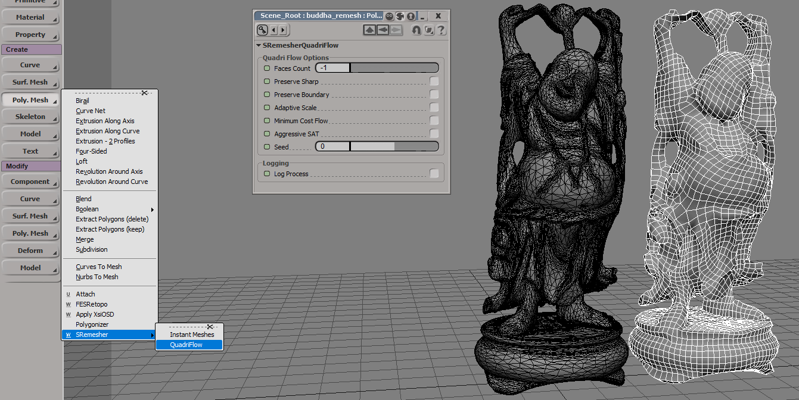
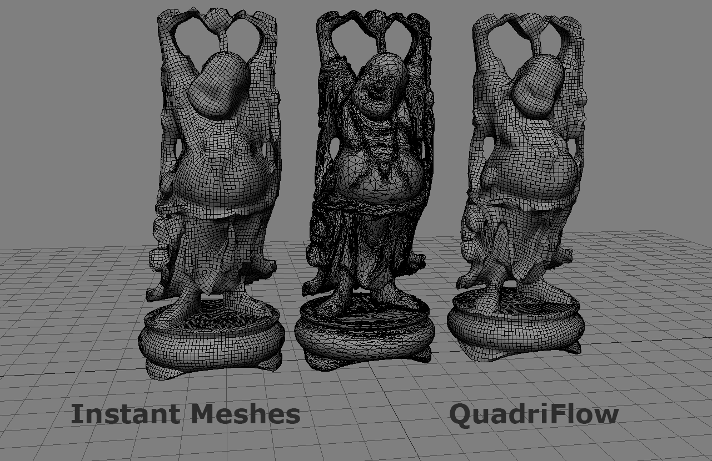

S-Remesher
Last update: 21.11.2019
Description: this addon implement two open-source algorithm for remeshing of polygon mesh objects: Instant Meshes and QuadriFlow.
Download: S-Remesher addon, sources on the GitHub
How to install: copy *.dll file to any workgroup and restart Softimage. Also this addon requires tbb.dll (download it and place it in the same folder as SRemesher.dll) and vc14 runtime on the system (download Visual C++ Redistributable for Visual Studio 2015 package from here and install it).
How to use: Select any polygon mesh and choose Create - Poly. Mesh - SRemesher - Instant Meshes or QuadriFlow. The new remeshed object will be created.
Instant Meshes
There are two parameters for controlling of the target geometry polygons count: Edge Length and Faces Count. If both parameters are equal to -1, then the target mesh will be created with approximately 1/16 polygons of the original mesh. If Edge Length is greater than 0, then the new mesh will be created with polygons of this side. For controlling polygons density by hand, set Edge Length to -1 and set the desired number of polygons for the second parameter.
Parameter Object Scale sometimes helps to make remeshing more accurate. It virtually scale the original mesh, make remeshing and then scale it back.
QuadriFlow
There is only one parameter for controlling target polygons count: Faces Count. If this parameter is equal to -1, then target mesh will be created approximately 1/16 polygons of the original mesh.
Comparison
Instant Meshes works much faster than QuadriFlow, because it multi-threaded. QuadriFlow works only on the single thread. But the mesh, obtained from Quadri Flow, is more accurate. Current implementation of the Instant Meshes works in automatic mode. The standalone application (available at the repository) have more options and can produce more accurate mesh.